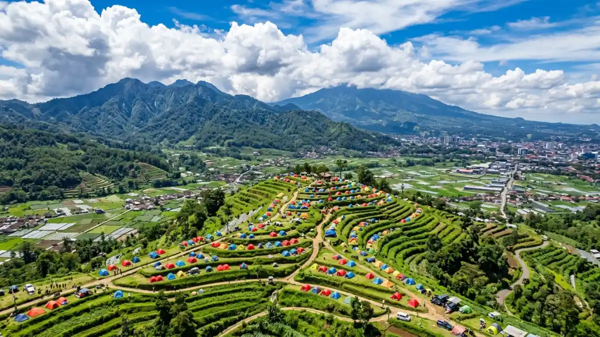
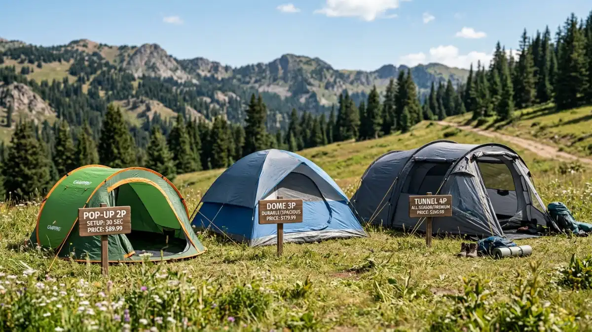

Tenda camping di kawasan pegunungan Batu — panduan lengkap harga sewa dan beli.Harga tenda camping di Batu bervariasi tergantung pilihan sewa atau beli, kapasitas tenda, dan musim liburan. Sewa harian umumnya lebih murah, sementara membeli cocok untuk yang sering camping.
- Apa yang Mempengaruhi Harga Tenda Camping di Batu?
- Berapa Kisaran Harga Sewa Tenda Camping di Batu?
- Berapa Kisaran Harga Beli Tenda Camping Baru?
- Jenis-Jenis Tenda Camping dan Pengaruhnya pada Harga
- Sewa atau Beli Tenda, Mana yang Lebih Cocok untuk Anda?
- Tips Memilih Tenda Camping Sesuai Budget
- Kesalahan Umum Saat Memilih Tenda Camping
- Lokasi Camping Populer di Batu dan Kebutuhan Tendanya
- FAQ
Apa yang Mempengaruhi Harga Tenda Camping di Batu?
Harga tenda camping di Batu dipengaruhi oleh kapasitas, bahan, merek, dan apakah tenda disewa atau dibeli baru. Faktor musim dan lokasi juga ikut berperan.
Kapasitas adalah faktor paling jelas terlihat. Tenda untuk dua orang biasanya lebih murah dibanding tenda untuk enam orang atau lebih, baik dalam skema sewa maupun beli.
Bahan tenda juga berpengaruh, sebab tenda dengan lapisan waterproof tebal dan rangka aluminium umumnya dihargai lebih tinggi dibanding tenda berbahan standar.
Musim liburan di Batu, seperti libur sekolah dan akhir tahun, sering membuat permintaan sewa tenda meningkat.
Saat permintaan tinggi, sebagian penyedia jasa sewa dapat menyesuaikan tarif mereka, terutama untuk titik camping yang populer di sekitar kawasan pegunungan Batu.
Berapa Kisaran Harga Sewa Tenda Camping di Batu?
Harga sewa tenda camping di Batu umumnya dihitung per malam dan bervariasi sesuai kapasitas, mulai dari tenda kecil untuk dua orang hingga tenda keluarga berkapasitas besar.
Secara umum, semakin besar kapasitas tenda, semakin tinggi pula tarif sewanya. Tenda kapasitas dua hingga empat orang biasanya berada di kisaran tarif paling terjangkau, sementara tenda keluarga atau tenda kapasitas besar berada di kisaran yang lebih tinggi.
Beberapa penyedia juga menawarkan paket sewa yang sudah termasuk matras, sleeping bag, dan lampu camping, sehingga harga totalnya bisa lebih tinggi dibanding sewa tenda saja.

Tenda camping di kawasan pegunungan Batu — pilihan sewa dan beli tersedia untuk berbagai kebutuhan.Berapa Kisaran Harga Beli Tenda Camping Baru?
Harga beli tenda camping baru umumnya lebih tinggi dibanding sewa sekali pakai, namun lebih hemat jangka panjang bagi yang sering camping di kawasan Batu maupun lokasi lain.
Tenda dome ukuran kecil untuk dua orang biasanya menjadi pilihan paling ekonomis di pasaran. Tenda tunnel dan tenda dengan kapasitas besar untuk keluarga biasanya memiliki harga yang lebih tinggi disebabkan oleh ukuran dan bahan yang lebih rumit.
Selain ukuran, merek dan kualitas jahitan juga memengaruhi harga jual tenda di toko perlengkapan outdoor.
Jenis-Jenis Tenda Camping dan Pengaruhnya pada Harga
Jenis tenda seperti dome, tunnel, dan tenda kapasitas besar memiliki struktur berbeda yang membuat kisaran harganya juga berbeda satu sama lain.
Tenda dome memiliki bentuk setengah lingkaran dan rangka yang menyilang, membuatnya stabil saat terkena angin namun tetap ringan dibawa.
Tenda tunnel memiliki bentuk yang lebih panjang dan umumnya digunakan untuk kelompok menengah, dengan ruang interior yang lebih luas dibandingkan dengan tenda dome yang berukuran sama.
Tenda kapasitas besar atau tenda keluarga umumnya memiliki sekat ruang dan tinggi atap yang lebih lega, sehingga harganya cenderung berada di kelas atas.
Selain tiga jenis tersebut, ada juga tenda ultralight yang dirancang untuk pendaki yang mengutamakan bobot ringan.
Harga tenda jenis ini biasanya lebih tinggi karena menggunakan material khusus yang lebih ringan namun tetap kuat.
Sewa atau Beli Tenda, Mana yang Lebih Cocok untuk Anda?
Sewa tenda lebih cocok untuk camping sesekali, sementara membeli tenda lebih hemat jangka panjang bagi yang sering camping di Batu atau lokasi lain secara rutin.
Bagi wisatawan yang hanya berencana camping satu atau dua kali dalam setahun, menyewa tenda umumnya menjadi pilihan yang lebih praktis. Tidak perlu memikirkan penyimpanan, perawatan, maupun risiko kerusakan jangka panjang.
Sebaliknya, bagi pendaki atau keluarga yang rutin camping setiap bulan, membeli tenda sendiri dapat lebih menghemat biaya dalam jangka waktu yang lebih panjang, sekaligus memberi kebebasan memilih jenis dan kualitas tenda sesuai preferensi.
Tips Memilih Tenda Camping Sesuai Budget
Memilih tenda sesuai budget dapat dilakukan dengan menyesuaikan kapasitas dengan jumlah peserta, memeriksa kondisi tenda sebelum sewa, dan membandingkan beberapa pilihan harga.
Pertama, tentukan jumlah peserta camping agar kapasitas tenda tidak berlebihan atau justru terlalu sempit.
Kedua, saat menyewa, pastikan untuk memeriksa kondisi fisik tenda, termasuk zipper, lapisan anti air, dan kelengkapan patok sebelum membawanya pulang.
Ketiga, bandingkan beberapa pilihan harga dari penyedia sewa atau toko berbeda sebelum memutuskan, karena selisih harga antar penyedia di kawasan Batu cukup umum terjadi.
Selain itu, penting untuk mempertimbangkan kondisi cuaca di tempat camping yang akan dikunjungi. Kawasan Batu yang berada di dataran tinggi cenderung memiliki suhu malam yang lebih dingin, sehingga tenda dengan lapisan tambahan untuk menahan angin dan embun bisa menjadi pertimbangan tambahan, meski biasanya berpengaruh pada harga.
Kesalahan Umum Saat Memilih Tenda Camping
Kesalahan umum saat memilih tenda camping antara lain memilih kapasitas yang terlalu kecil, mengabaikan kualitas bahan, dan tidak memeriksa kelengkapan aksesori pendukung.
Banyak orang memilih tenda berdasarkan harga termurah tanpa memperhitungkan jumlah peserta sebenarnya, sehingga tenda terasa sempit saat digunakan.
Kesalahan lain adalah mengabaikan kualitas bahan anti air, yang berisiko membuat tenda bocor saat hujan turun di malam hari.
Selain itu, beberapa orang lupa memeriksa kelengkapan seperti patok, tali pengikat, dan flysheet, padahal kelengkapan ini penting untuk kenyamanan dan keamanan saat camping.
Lokasi Camping Populer di Batu dan Kebutuhan Tendanya
Beberapa lokasi camping populer di Batu memiliki karakteristik berbeda, sehingga jenis dan ukuran tenda yang dibutuhkan juga bisa disesuaikan dengan kondisi medan di masing-masing tempat.
Kawasan dataran tinggi di sekitar Batu umumnya memiliki suhu malam yang lebih sejuk dibanding daerah dataran rendah, sehingga tenda dengan ventilasi yang dapat ditutup rapat sering menjadi pilihan yang lebih nyaman.
Tempat berkemah di area terbuka umumnya memerlukan tenda yang lebih kokoh terhadap angin, sedangkan tempat berkemah di daerah perbukitan yang memiliki pepohonan biasanya lebih terlindungi.
Harga tenda camping di Batu dipengaruhi oleh pilihan sewa atau beli, kapasitas, bahan, dan musim liburan.
Sewa tenda lebih cocok untuk camping sesekali, sementara membeli tenda lebih hemat bagi yang sering camping secara rutin.
Sebelum memutuskan, sesuaikan kapasitas tenda dengan jumlah peserta, periksa kelengkapan dan kualitas bahan, serta pertimbangkan kondisi cuaca di lokasi camping yang dituju di kawasan Batu.
FAQ
1. Apakah semua lokasi camping di Batu menyediakan sewa tenda di tempat?
Tidak semua lokasi menyediakan sewa tenda langsung di tempat, sehingga sebagian pengunjung lebih memilih menyewa tenda dari penyedia jasa sebelum berangkat ke lokasi camping.
2. Apakah camping di Batu memerlukan reservasi terlebih dahulu?
Sebagian lokasi camping yang sudah dikelola secara resmi memerlukan reservasi terlebih dahulu, terutama saat musim liburan, sementara lokasi lain dapat dikunjungi tanpa reservasi.
3. Apakah cuaca di Batu selalu dingin sepanjang tahun?
Kawasan Batu yang berada di dataran tinggi umumnya memiliki suhu yang lebih sejuk dibanding dataran rendah, namun suhu tetap dapat bervariasi tergantung musim dan waktu camping.